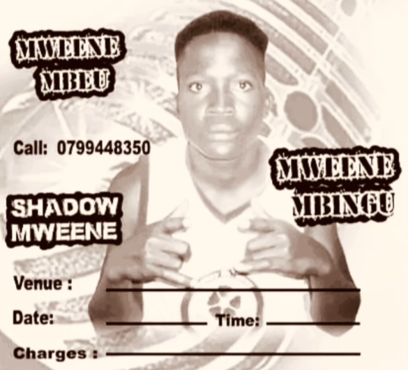

Minguni Happy-lover

Daniel Nzeki alias Happy-lover(Sadlover) is a heartfelt Kamba vocalist, songwriter, and performer from the County of Masaku (Machakos), Kenya. Since 2018, he has been crafting deeply emotional love songs — exploring village romance, heartbreak tales, and modern love struggles through poetic lyrics and powerful vocals. Beyond the mic, he's also a storyteller, novelist, and scriptwriter, weaving words that resonate with the soul of love and pain.
Leave a Comment